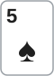
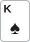
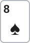

안녕하세요. 대회 초반, 스택이 100BB로 깊은 레벨이에요. 블라인드가 아직 작아서 림프가 여럿 들어오면 다섯 명이 플랍을 보는 판이 생길 수 있어요.
오늘 Hero는 버튼에서 A♠5♠로 따라 들어가 플랍에 넛 플러시 드로우를 맞혔어요. 상대가 둘 이상일 때 드로우의 콜 기준이 어떻게 달라지는지, 그리고 턴 카드 한 장이 아웃츠를 몇 장 더 보태는지까지 플랍과 턴을 따라가 봐요.
이 글에서 배울 것
- 멀티웨이에서는 앞사람의 콜이 팟오즈를 좋게 만든다는 것
- 다음 한 장만 보는 콜은 한 장 확률로 따지고, 모자라는 몫은 맞았을 때 더 받을 돈(임플라이드 오즈)으로 채운다는 것
- 아웃츠는 보드가 바뀔 때마다 다시 세고, 맞아도 질 수 있는 더러운 아웃츠는 따로 떼어 본다는 것
오늘의 한 판
Hero (BTN · 스택 100BB) · 블라인드 0.5/1, BB 앤티 1BB


프리플랍
UTG 1BB 림프 → MP 림프 → Hero(BTN) 림프 → SB가 0.5BB를 더 내고 맞춤 → BB 체크. 다섯 명이 1BB씩 넣고 BB가 낸 앤티 1BB까지, 팟은 6BB예요.
플랍 · 팟 6BB


SB 체크 → BB 체크 → UTG 3BB 벳 → MP 콜 → Hero는?
Hero는 스페이드 넷 중 가장 높은 A♠를 들고 있어서, 스페이드가 한 장 더 오면 가장 높은 플러시(넛 플러시)가 돼요. 페어는 없어요. 보드에 3이 있어서 2와 4가 연달아 오면 A-2-3-4-5 스트레이트가 되는 백도어도 덤으로 있어요.
턴 · 팟 15BB

플랍에서 Hero가 콜하고 블라인드는 접었어요. 팟 6 + 3 + 3 + 3 = 15BB. 턴 2♣, UTG 9BB 벳 → MP 폴드 → Hero는?
2♣는 스페이드가 아니지만 그냥 지나가는 카드도 아니에요. 플랍의 백도어가 반쯤 이뤄졌어요.
결론부터 말할게요. 플랍은 콜, 턴도 콜이에요. 플랍은 MP의 콜 덕분에 거의 팟오즈만으로 콜이 되고, 턴은 2♣가 보태 준 아웃츠 덕분에 맞았을 때 아주 조금만 더 받으면 되는 콜이에요.
남은 베팅이 있어 실제 결과는 달라질 수 있어요. 그래서 BB 금액은 기준을 구하는 계산용으로만 쓰고, 판정은 확률과 필요 에퀴티 비교로 해요.
오늘의 가정
- 아웃츠: 스페이드와, 턴부터는 휠 스트레이트를 만드는 4를 셈해요. A가 와서 A 페어가 되는 경우는 K 페어를 못 이겨서 넣지 않았어요
- 상대 핸드: 오늘 가정에서 UTG의 벳은 KQ·KJ 같은 K 페어가 중심이에요. 셋이나 투페어가 섞여 있을 가능성은 3단계 '더러운 아웃츠'에서 따로 따져요. 솔버 결과가 아니고, 상대 레인지는 말로만 다뤄요
1단계. 플랍: 앞사람의 콜이 팟오즈를 바꿔요
필요 에퀴티
Hero 차례에 팟에는 6BB + UTG 3BB + MP 3BB가 있어요. Hero가 3BB를 내면 팟은 15BB가 돼요.
필요 에퀴티 = 3(콜) ÷ 15(콜한 뒤 팟) = 20%
만약 MP가 없이 UTG와 둘만 있었다면, 같은 3BB 콜에 콜한 뒤 팟은 12BB라 필요 에퀴티가 25%였어요. MP가 콜해 준 3BB가 Hero 기준을 낮춰 준 거예요. Hero가 낼 돈은 그대로인데 이기면 가져올 돈만 늘었으니까요.
내 확률은 몇 %로 볼까
남은 스페이드는 2♠ 3♠ 4♠ 6♠ 7♠ 9♠ T♠ J♠ Q♠, 9장이에요. 리버까지 두 장을 다 보면 맞을 확률이 약 35.0%예요. 그런데 이 숫자를 그대로 쓰면 안 돼요. 턴에서 UTG가 또 걸 수 있고, Hero 뒤에 SB·BB도 아직 레이즈할 수 있거든요. 지금 콜로 확실히 보는 건 턴 한 장뿐이에요.
턴 한 장에 맞을 확률 = 9 ÷ 47 = 약 19.1%
19.1%는 필요 에퀴티 20%에 아주 조금 모자라요. 그 차이를 메우려면 맞았을 때 지금 팟 말고 약 0.67BB만 더 받으면 돼요.
이게 무슨 뜻이냐면
0.67BB는 맞은 뒤 상대 둘 중 누구라도 아주 작은 벳 한 번만 콜해 주면 채워지는 돈이에요. 그래서 플랍 콜은 고민할 게 거의 없어요. 멀티웨이라서 팟오즈가 싸고, 맞았을 때 돈을 줄 사람도 여럿이에요.
2단계. 턴: 2♣가 아웃츠를 바꿨어요
아웃츠부터 다시 세요
턴이 오면 제일 먼저 할 일은 아웃츠를 처음부터 다시 세는 것이에요. Hero 손의 A·5에 보드의 3·2가 붙어서 A-2-3-_-5가 됐어요. 빈자리 하나, 4만 오면 A-2-3-4-5, 가장 낮은 스트레이트인 휠이에요. 가운데 한 칸이 비어 있는 드로우라 거트샷이라고 불러요.
4는 네 장이 남아 있는데, 4♠는 이미 스페이드 9장에 들어 있어요. 그래서 새로 더해지는 건 4♥·4♦·4♣ 세 장이에요. 아웃츠는 9장에서 12장이 됐어요.
리버 한 장에 맞을 확률 = 12 ÷ 46 = 약 26.1%
필요 에퀴티와 비교해요
UTG가 팟 15BB에 9BB를 걸었고, 이번엔 MP가 접었어요. Hero가 콜하면 팟은 33BB예요.
필요 에퀴티 = 9 ÷ 33 = 약 27.3%
26.1%는 27.3%에 거의 닿았어요. 스페이드만 셌다면 9 ÷ 46, 약 19.6%로 한참 모자랐을 거예요. 4 세 장이 기준과의 거리를 확 줄여 준 거예요.
모자라는 돈은 얼마일까
이제 I09에서 배운 임플라이드 오즈 계산으로, 맞았을 때 얼마를 더 받아야 본전인지 구해요. 같은 장면을 46번 겪는다고 생각해 보면 쉬워요.
- 못 맞는 34번: 매번 콜한 9BB를 잃어요
- 맞는 12번: 그 손해를 이 12번 안에 다 갚아야 해요. 한 번에 갚아야 하는 돈은 34 × 9 ÷ 12 = 25.5BB예요
- 맞았을 때 이미 팟에 있는 돈은 원래 팟 15BB + UTG 벳 9BB = 24BB예요
더 받아야 하는 돈 = 25.5 − 24 = 1.5BB
이게 무슨 뜻이냐면
맞은 리버에서 팟은 33BB예요. 거기서 1.5BB만 더 받으면 턴 콜이 본전이 돼요. 상대가 아주 작은 벳 하나에 콜하거나, 먼저 조금 걸어 주기만 해도 채워지는 돈이에요. 오늘 가정한 K 페어라면 충분히 그려지는 장면이에요. 그래서 턴은 콜이에요.
3단계. 그 12장, 다 믿어도 될까
맞아도 질 수 있는 카드
I03에서 본 것처럼 아웃츠 중에는 맞아도 질 수 있는 카드, 더러운 아웃츠가 섞여 있을 수 있어요. 오늘 12장을 한 장씩 보면 이래요.
- 2♠·3♠: 플러시는 되지만 보드에 페어가 생겨요. UTG가 K3·K2 같은 투페어나 33·22 같은 셋이었다면 풀하우스가 돼서 Hero의 넛 플러시를 이겨요. KK·88 같은 셋도 마찬가지예요
- 4♥·4♦·4♣: Hero는 휠이 되지만, 65를 든 사람은 2-3-4-5-6, 더 높은 스트레이트가 돼요
- 4♠·6♠·7♠·9♠·T♠·J♠·Q♠: 보드에 페어도 안 생기고 Hero가 플러시라, 오늘 보드에서는 지는 경우가 없어요. 4♠는 플러시와 휠이 동시에 되는 카드예요
그러니까 정확히 말하면 Hero는 "넛 플러시 드로우"이지 "맞으면 무조건 이기는 드로우"는 아니에요. 넛은 플러시끼리 비교할 때 가장 높다는 뜻이에요. 보드가 페어가 되면 플러시보다 높은 핸드가 생길 수 있어요.
아웃츠를 깎으면 숫자가 어떻게 바뀔까
UTG가 셋·투페어일 수 있다고 보고 2♠·3♠를 빼면 아웃츠는 10장이에요.
| 아웃츠로 보는 카드 | 장 수 | 리버에 맞을 확률 | 맞았을 때 더 받아야 하는 돈 |
|---|---|---|---|
| 스페이드 + 4 전부 | 12 | 약 26.1% | 약 1.5BB |
| 2♠·3♠ 빼기 | 10 | 약 21.7% | 약 8.4BB |
| 스페이드만(2♣가 휠 드로우를 안 만들었다면) | 9 | 약 19.6% | 약 13BB |
10장으로 깎아도 더 받아야 할 돈은 약 8.4BB예요. 리버 팟 33BB에서 그 정도 벳에 한 번 콜을 받는 장면은 오늘 가정에서 그려 볼 수 있어요. 그래서 판정은 그대로 콜이에요.
이게 무슨 뜻이냐면
아웃츠가 한두 장 바뀔 때마다 더 받아야 할 돈이 크게 출렁여요. 맞는 판 수가 줄면, 그 몇 안 되는 판이 갚아야 할 손해가 한꺼번에 몰리기 때문이에요. 그래서 턴 판단에서는 "몇 장인가"를 정확히 세는 것이 계산 공식만큼 중요해요.
게다가 더러운 아웃츠는 손해가 두 번이에요. 맞았다고 믿고 리버에 돈을 더 넣었다가 풀하우스에 지면, 더 받을 돈이 오히려 더 잃는 돈이 되거든요.
왜 그럴까: 멀티웨이가 드로우에 주는 것과 뺏는 것
주는 것: 싼 팟오즈와 여러 지갑
앞사람이 콜할 때마다 팟이 커지는데 Hero가 낼 돈은 그대로예요. 그래서 필요 에퀴티가 내려가요. 또 맞았을 때 돈을 줄 수 있는 사람이 여럿이라 임플라이드 오즈도 커져요. P04에서 본 것처럼 멀티웨이는 애매한 한 페어 값이 떨어지고, 크게 맞을 수 있는 드로우의 값이 올라가는 판이에요.
뺏는 것 하나: 레이즈의 힘
반대로 플랍에서 레이즈로 팟을 가져오기는 어려워져요. UTG와 MP, 그리고 아직 결정이 남은 SB·BB까지 모두가 접어야 레이즈가 바로 이기거든요(P04). 한 명이라도 남으면 팟만 커진 채 드로우로 싸워야 해요. 그래서 이 판은 콜로 싸게 보고, 맞으면 받는 길이 어울려요.
뺏는 것 둘: 깨끗한 아웃츠
상대가 많을수록 그중 누군가 셋·투페어나 65를 들고 있을 수 있어요. 헤즈업이면 상대 한 명의 레인지만 걱정하면 되는데, 멀티웨이에서는 여러 레인지 중 하나만 걸려도 Hero의 2♠·3♠·4가 지는 카드가 돼요. 그래서 멀티웨이일수록 아웃츠를 조금 더 보수적으로 세는 게 안전해요.
자주 하는 실수
실수 1. "두 장 확률 35%면 넉넉하네"로 턴 콜까지 정함 리버까지 두 장 확률을 쓰면 플랍·턴 둘 다 쉽게 콜로 보여요. 하지만 오늘 UTG는 턴에 9BB를 또 걸었어요. 한 번 낸 돈으로 두 장을 다 보는 게 아니에요. 대신 다음 한 장만 보장된다고 보고 한 장 확률로 비교해요.
실수 2. 플랍에서 센 아웃츠를 턴에도 그대로 씀 플랍의 9장을 턴에도 쓰면 확률은 약 19.6%, 더 받아야 할 돈은 약 13BB로 나와요. 2♣가 보태 준 4 세 장을 놓친 거예요. 반대로 보드가 페어가 되는 카드가 오면 아웃츠가 줄기도 해요. 대신 카드가 한 장 깔릴 때마다 아웃츠를 처음부터 다시 세요.
실수 3. "넛 드로우니까 맞으면 끝" 넛 플러시는 플러시 중에 가장 높을 뿐이에요. 오늘 2♠·3♠는 상대가 투페어·셋이면 풀하우스를 만들어 줘요. 이걸 잊고 맞자마자 크게 걸면, 받아 주는 핸드가 Hero를 이기는 풀하우스뿐일 수 있어요. 대신 보드를 페어로 만드는 아웃츠는 따로 표시해 두고, 맞은 뒤의 벳 크기도 그걸 생각해서 정해요.
"넛이 아닌 플러시 드로우였다면요?"
예를 들어 7♠6♠라면 오늘 턴에 스페이드 9장은 같지만, 사정이 많이 달라요. 4가 와도 휠이 안 되니 4 세 장이 없어요. 스페이드가 왔을 때 상대가 더 높은 스페이드를 들고 있으면 더 높은 플러시에 지고, 맞은 뒤 크게 걸어도 받아 주는 게 더 높은 플러시뿐일 수 있어요.
멀티웨이에서는 그 위험이 더 커져요. 상대가 많을수록 누군가 A♠·Q♠ 같은 높은 스페이드를 들고 있을 수 있으니까요. 그래서 낮은 플러시 드로우는 아웃츠도 덜 세고, 임플라이드 오즈도 덜 쳐 줘야 해요. 오늘 A♠5♠가 편하게 콜할 수 있었던 건 넛이라서, 그리고 2♣가 휠 드로우를 보태 줘서예요.
숫자가 뒤집히는 지점
오늘 턴 콜은 두 기둥 위에 서 있어요. 하나는 아웃츠 12장, 다른 하나는 벳 크기 9BB예요.
- 아웃츠가 깎일수록 더 받아야 할 돈이 1.5BB → 8.4BB → 13BB로 커져요. UTG의 레인지에 셋·투페어가 많다고 볼 근거가 있으면 콜이 점점 힘들어져요
- 벳 크기가 바뀌면 필요 에퀴티와 더 받아야 할 돈을 둘 다 처음부터 다시 구해요. 9BB에서 나온 1.5BB를 다른 벳 크기에 그대로 쓰면 안 돼요
- UTG가 스페이드 리버에 어떤 벳에도 접는 핸드만 들고 있다면 1.5BB조차 안 나올 수 있어요. 다만 26.1%와 27.3%가 아주 가까워서, 이 경우에도 콜의 손해는 작아요
선생님의 한마디
- 멀티웨이에서 벳을 받으면 내 앞에서 콜한 돈까지 넣어 필요 에퀴티를 구하고, 확률은 다음 한 장 기준으로 봐요
- 카드가 깔릴 때마다 아웃츠를 다시 세고, 보드 페어 카드처럼 맞아도 질 수 있는 카드는 따로 떼어 봐요
- 모자라면 맞았을 때 더 받아야 하는 돈을 구하고, 그 돈이 리버에서 실제로 나올 장면을 그려 봐요
연습 문제
학습툴 팟오즈 계산기로 필요 에퀴티를 확인할 수 있어요.
문제 1. 같은 판인데 턴이 2♣가 아니라 9♥예요. UTG가 팟만큼, 15BB를 걸고 MP는 접었어요. A 페어는 세지 않는 오늘 가정 그대로예요. 넛 플러시 드로우로 콜할까요?
정답 보기
먼저 아웃츠를 다시 세요. 9♥는 휠 드로우를 만들지 않아서 아웃츠는 스페이드 9장뿐이에요. 리버 한 장 확률은 약 19.6%예요. 필요 에퀴티는 15 ÷ 45, 약 33.3%예요. 모자라는 몫을 돈으로 바꾸면 맞았을 때 약 31.67BB를 더 받아야 해요. 팟이 45BB인 리버에서, 스페이드 세 장이 깔린 보드에 K 페어가 그만큼 콜해 주는 장면은 그리기 어려워요 → 폴드가 기본이에요. 턴 카드가 아웃츠를 보태지 않았고, 벳은 커졌어요. 본문 턴과 결론이 뒤집힌 이유가 이 두 가지예요.
문제 2. 본문 턴과 같은 2♣, UTG도 똑같이 9BB를 걸었어요. 그런데 이번엔 MP가 접지 않고 콜했어요. MP는 플랍부터 따라온 사람이라 셋·투페어도 있을 수 있어서 조심스러워요. Hero는 콜할까요?
정답 보기
Hero 차례에 팟은 15 + 9 + 9 = 33BB이고, 콜하면 42BB예요. 필요 에퀴티는 9 ÷ 42, 약 21.4%로 내려가요. 아웃츠 12장이면 리버 한 장 확률이 약 26.1%라 팟오즈만으로 콜이에요. MP가 걱정돼서 보드를 페어로 만드는 2♠·3♠를 빼도 10장, 약 21.7%로 여전히 기준을 넘어요 → 콜. 상대가 둘이 되면서 아웃츠를 보수적으로 세야 했지만, 그만큼 MP의 콜이 팟오즈를 좋게 만들어 줬어요.
핵심 정리
- 멀티웨이에서는 앞사람의 콜이 팟을 키워 드로우의 필요 에퀴티를 낮춰요
- 다음 벳이 남아 있으면 확률은 한 장 기준으로 비교하고, 모자라는 몫은 맞았을 때 더 받아야 하는 돈으로 바꿔 봐요
- 아웃츠는 고정된 숫자가 아니에요. 턴 카드가 보태기도(휠 거트샷), 깎기도(보드 페어) 해요
- 넛 드로우는 같은 종류 핸드 중 가장 높다는 뜻이에요. 보드가 페어가 되면 지는 카드가 생기고, 상대가 많을수록 그 위험이 커져요
정리하며
오늘은 대회 초반 다섯 명이 본 림프 팟에서, 넛 플러시 드로우로 플랍과 턴을 콜하는 판을 따라갔어요. 플랍은 MP의 콜 덕분에 필요 에퀴티가 20%로 내려가 거의 팟오즈만으로 콜이었어요. 턴은 2♣가 휠 거트샷을 보태 아웃츠가 12장이 됐고, 맞았을 때 약 1.5BB만 더 받으면 되는 콜이었어요. 2♠·3♠처럼 맞아도 질 수 있는 카드를 빼고 봐도 판정은 같았어요.
다음 글 R05에서는 다시 헤즈업으로 돌아가, 탑페어 탑키커가 턴에 체크레이즈를 받는 판을 따라가요. 오늘은 드로우를 들고 따라가는 쪽이었다면, 다음은 만들어진 핸드가 갑자기 커진 팟 앞에서 리버까지 어떻게 계획하는지예요.
AI 작성 · 숫자는 계산 검증 · 가정 레인지 기준(솔버 결과 아님) · 토너 BB 앤티 1BB · 남은 베팅이 있어 BB 금액은 계산용